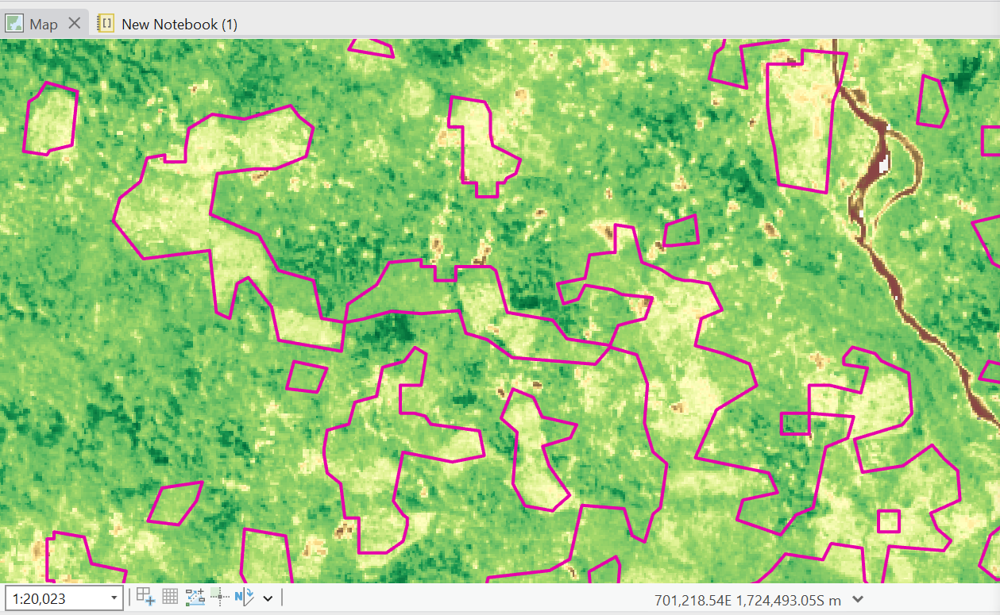
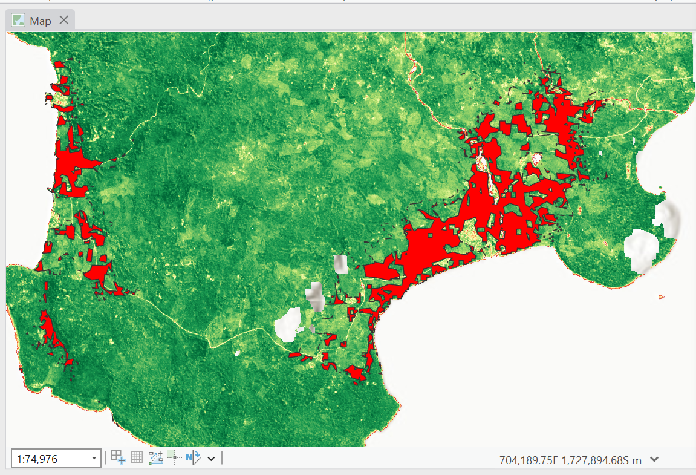

South Espiritu Santo Above-Ground Biomass (AGB)
Pierre Misrai, 2025
Introduction
This self-directed project aims to assess the potential carbon stock loss resulting from my previous work, the projected land cover transition from forest to coconut plantation Link to the study. The analysis is based on a previous land cover change projection, with the objective of quantifying the carbon currently stored in the future affected area and estimating the potential loss under the projected scenario. It also demonstrates my growing interest in remote sensing and GIS related to carbon stock. Additionally, it showcases the use of various tools and data sources, including Sentinel-2, Google Earth Engine, JavaScript, and Python in ArcGIS Pro. The final map design was created using Adobe Illustrator.

Results
The total area analyzed (potential transition from forest to coconut) is 807 hectares. The total estimated Above-Ground Biomass (AGB) is 61,515,922.33 kg (approximately 61,516 tonnes). This corresponds to an average AGB of approximately 76,200 kg/ha (or 76.2 tonnes/ha) when dividing the total biomass by the total area.
Methodology
The primary objective of this study is to quantify the above-ground biomass (AGB) within the area projected to transition from forest to coconut plantation, based on prior land cover change modeling, and subsequently estimate the potential carbon loss under this scenario.
Terrestrial ecosystems store carbon in five main pools: above-ground biomass (AGB), below-ground biomass (BGB), litter, woody debris, and soil organic matter [14]. Among these, AGB is the most visible, dynamic, and significant, representing up to 30% of the total terrestrial ecosystem carbon pool and accounting for more than 70% of total forest biomass [15]. AGB also plays a critical role in atmospheric carbon fluxes, particularly in response to disturbances such as fire, logging, and land use conversion (Basam Dahy et al., 2020).
In this study, we concentrate on estimating AGB using a methodology that integrates remote sensing (RS) and geographic information systems (GIS). Before presenting the workflow, it is useful to review existing research in this field.
Basam Dahy et al. (2020) reviewed various approaches to modeling AGB and observed a recent shift towards RS-based methods. Traditional assessment methods are known to be the more accurate; they are based on field measurements. Nevertheless, they are costly, intensive labor works, and difficult to implement at large scales [17][18]. Remote sensing (RS) integrated with Geographic Information Systems (GIS) techniques are widely applied to different natural resources applications and biomass assessment[19–21]. RS is capable of accurately and timely, sensing and recording forest variables over large areas and at relatively, very low cost [22]. Besides, modelling RS data within a GIS environment will augment the advantages of both technologies, permitting for the use of a wide range of ancillary and field data to the analysis, hence increasing the accuracy of the estimated AGB (Basam Dahy et al., 2020). For this study, given the absence of field data and the scale of the analysis, a remote sensing and GIS approach was selected.
An important reference for the methodology is the work of Francini et al. (2024), Field-independent carbon mapping and quantification in forest plantation through remote sensing (European Journal of Remote Sensing, 57(1)). This study demonstrated the feasibility of quantifying carbon stocks from Sentinel-2 data without relying extensively on field measurements, using them only for accuracy assessment. Francini et al. processed Sentinel-2 imagery to calculate seven spectral indices; Normalized Difference Vegetation Index (NDVI), Normalized Burned Ratio (NBR), Enhanced Vegetation Index (EVI), Tasselled Cap Brightness (TCB), Tasselled Cap Wetness (TCW), Tasselled Cap Greenness (TCG), Tasselled Cap Angle (TCA).
Sentinel-2 data from 2024 was processed using Google Earth Engine (GEE). The workflow involved cloud masking, calculation of several spectral indices, and integration of elevation data to create a composite raster. The JavaScript code used in GEE for these steps is documented with accompanying screenshots below.
Google Earth Engine Script
function mask2clouds(image) {
var scl = image.select('SCL');
var mask = scl.eq(4).or(scl.eq(5)).or(scl.eq(6)).or(scl.eq(7)).or(scl.eq(8));
return image.updateMask(mask).copyProperties(image, ["system:time_start"]);
}
var AOI = table.geometry();
var S2 = ee.ImageCollection("COPERNICUS/S2_SR")
.filterDate('2024-06-01','2025-01-01')
.filter(ee.Filter.lt('CLOUDY_PIXEL_PERCENTAGE',20))
.map(mask2clouds)
.filterBounds(AOI)
.median()
.clip(AOI);
var ndvi = S2.normalizedDifference(['B8', 'B4']).rename('NDVI');
var evi = S2.expression(
'2.5 * ((NIR - RED) / (NIR + 6 * RED - 7.5 * BLUE + 1))', {
'NIR': S2.select('B8'),
'RED': S2.select('B4'),
'BLUE': S2.select('B2')
}).rename('EVI');
var nbr = S2.normalizedDifference(['B8', 'B12']).rename('NBR');
var tcb = S2.expression(
'0.3037*B2 + 0.2793*B3 + 0.4743*B4 + 0.5585*B8 + 0.5082*B11 + 0.1863*B12', {
'B2': S2.select('B2'),
'B3': S2.select('B3'),
'B4': S2.select('B4'),
'B8': S2.select('B8'),
'B11': S2.select('B11'),
'B12': S2.select('B12')
}).rename('TCB');
var tcg = S2.expression(
'-0.2848*B2 - 0.2435*B3 - 0.5436*B4 + 0.7243*B8 + 0.0840*B11 - 0.1800*B12', {
'B2': S2.select('B2'),
'B3': S2.select('B3'),
'B4': S2.select('B4'),
'B8': S2.select('B8'),
'B11': S2.select('B11'),
'B12': S2.select('B12')
}).rename('TCG');
var tca = tcg.divide(tcb).atan().rename('TCA');
var composite = ndvi
.addBands(nbr)
.addBands(evi)
.addBands(tcb)
.addBands(tcg)
.addBands(tca)
.addBands(elevation);
Map.centerObject(AOI);
Map.addLayer(ndvi, {min: -1, max: 1, palette: ['Blue', 'Yellow', 'Green']}, 'NDVI');
Map.addLayer(evi, {min: -1, max: 1, palette: ['white', 'blue', 'green']}, 'EVI');
Map.addLayer(elevation, {min: 0, max: 3000, palette: ['white', 'black']}, 'Elevation');
Map.addLayer(tcb, {min: 0, max: 0.5, palette: ['brown', 'yellow', 'white']}, 'TCB (Brightness)');
Map.addLayer(tcg, {min: -0.3, max: 0.3, palette: ['blue', 'green', 'white']}, 'TCG (Greenness)');
Map.addLayer(tca, {min: -1.5, max: 1.5, palette: ['purple', 'white', 'orange']}, 'TCA (Angle)');
Following the import of the composite raster into ArcGIS Pro, a Python script was developed to estimate AGB using the Chave et al. (2005) allometric equation for moist forests:
AGB = exp(−2.024 − 0.896 × E + 0.920 × ln(WD) + 2.795 × ln(D) − 0.0461 × (ln(D))²)
where:
- E is an environmental stress variable; fixed at 0.1 for this study due to lack of precise data,
- WD represents wood density (g/cm³). A weighted average of 0.55 was calculated based on main tree species from South Espiritu Santo, using data from Chave et al. (2009):
- Agathis microstachya: 0.458
- Calophyllum neo-ebudicum: 0.500
- Pometia pinnata: 0.760
- Endospermum medullosum: 0.320
- D is the diameter at breast height (cm), estimated by the empirical formula D = 10 + 40 × NDVI.
Python Script for AGB Estimation
import arcpy
from arcpy.sa import *
import math
import numpy as np
arcpy.CheckOutExtension("Spatial")
input_raster_path = r"C:\Users\Pierre\Documents\Carbon project\GEEespiritusantodata\Indices_ES_2024.tif"
ndvi = ExtractBand(input_raster_path, 1)
nbr = ExtractBand(input_raster_path, 2)
evi = ExtractBand(input_raster_path, 3)
tcb = ExtractBand(input_raster_path, 4)
tcg = ExtractBand(input_raster_path, 5)
tca = ExtractBand(input_raster_path, 6)
elevation = ExtractBand(input_raster_path, 7)
ndvi_array = arcpy.RasterToNumPyArray(ndvi)
WD = 0.55
E = 0.1
def calc_AGB(ndvi_val):
if ndvi_val is None:
return 0
D = 10 + 40 * ndvi_val
if D <= 0:
return 0
return math.exp(-2.024 - 0.896 * E + 0.920 * math.log(WD) + 2.795 * math.log(D) - 0.0461 * (math.log(D))**2)
agb_array = np.zeros_like(ndvi_array, dtype=np.float32)
rows, cols = ndvi_array.shape
for r in range(rows):
for c in range(cols):
agb_array[r, c] = calc_AGB(ndvi_array[r, c])
agb_array_ha = agb_array * 100
composite_raster = arcpy.Raster(input_raster_path)
lower_left = arcpy.Point(composite_raster.extent.XMin, composite_raster.extent.YMin)
cell_size = composite_raster.meanCellWidth
agb_raster = arcpy.NumPyArrayToRaster(agb_array, lower_left, cell_size, cell_size)
spatial_ref = composite_raster.spatialReference
arcpy.DefineProjection_management(agb_raster, spatial_ref)
out_raster_path = r"C:\Users\Pierre\Documents\Carbon project\Testnotebookpython\output_AGB3.tif"
agb_raster.save(out_raster_path)
The Python script currently estimates AGB based solely on NDVI; future work will incorporate all spectral indices and machine learning methods (e.g., Scikit-learn) for improved accuracy.
The resulting AGB map reveals a clear correlation between lower biomass (yellow areas) and areas of the coconut plantations from the 2024 landcover, which store less carbon compared to forested areas (green). These findings would benefit from validation using field data.
Finally, the AGB raster was clipped to the polygon representing the area at risk of conversion from forest to coconut plantation, as determined by previous land cover modeling.
Limitations and Discussion
This study presents a remote sensing-based approach for AGB estimation without field validation data. Additionally, only NDVI was used in the current biomass estimation model, limiting predictive precision. Future research will aim to integrate all available spectral indices and implement machine learning algorithms to enhance the accuracy and robustness of the biomass estimations.
References
Chave, J., Andalo, C., Brown, S., Cairns, M. A., Chambers, J. Q., Eamus, D., ... & Yamakura, T. (2005). Tree allometry and improved estimation of carbon stocks and balance in tropical forests. Oecologia, 145(1), 87–99. https://doi.org/10.1007/s00442-005-0100-x
Dahy, B., Issa, S., Ksiksi, T., & Saleous, N. (2020). Geospatial Technology Methods for Carbon Stock Assessment: A Comprehensive Review. IOP Conference Series: Earth and Environmental Science, 540, 012036. https://doi.org/10.1088/1755-1315/540/1/012036
Francini, S., Vangi, E., D’Amico, G., Borghi, C., Cencini, G., Monari, C., … Chirici, G. (2024). Field-independent carbon mapping and quantification in forest plantation through remote sensing. European Journal of Remote Sensing, 57(1). https://doi.org/10.1080/22797254.2024.2334717
Zanne, A. E., Lopez-Gonzalez, G., Coomes, D. A., Ilic, J., Jansen, S., Lewis, S. L., Miller, R. B., Swenson, N. G., Wiemann, M. C., & Chave, J. (2009). Data from: Towards a worldwide wood economics spectrum. Ecology Letters, 12(4), 351–366. https://doi.org/10.1111/j.1461-0248.2009.01285.x